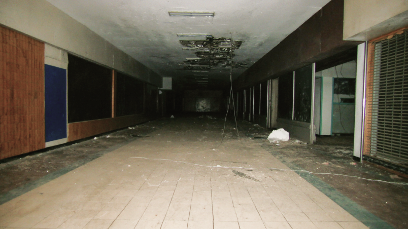
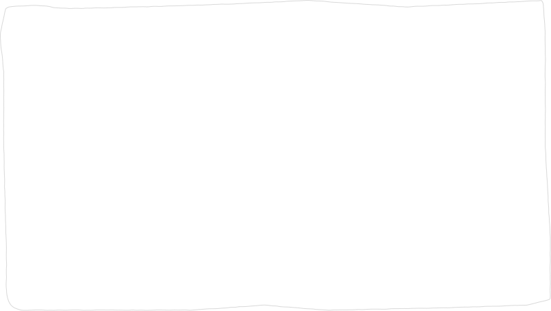

인구 변화가 곧바로 공간의 소멸로 이어지는 것은 아니다. 학교, 상업시설, 도로, 교통시설과 같은 물리적 환경은 장기간 사용할 것을 전제로 조성되기 때문에, 이를 이용하는 인구가 변한 이후에도 기존의 규모와 형태가 일정 기간 유지된다.
인구와 공간 사이의 불균형이 장기간 지속될 경우, 그 결과는 단순히 ‘조금 한산한 공간’에 머무르지 않을 수 있다. 이용수요가 충분히 유지되지 못하는 장소에서는 시설이 폐쇄되거나, 건물의 본래 기능이 중단된 채 유휴 상태로 남거나, 장기간 활용되지 않는 방치 공간이 발생할 수 있다.
교육 공간에서는 이 현상이 보다 직접적으로 드러난다. 교육부와 행정안전부가 2025년 발표한 자료에 따르면, 2024년 기준 누적 폐교 3,955개 가운데 367개가 미활용 상태였다. 나머지 가운데 2,609개는 매각되고 979개는 다른 용도로 활용되고 있다. 이 3,955개는 장기간 누적된 폐교 수이므로 모두 최근의 인구감소만으로 발생한 것으로 해석해서는 안 된다. 다만 교육부가 학생 수 감소에 따라 폐교 활용의 필요성이 커지고 있음을 공식적으로 제시하고 있다는 점에서, 학령인구 변화가 실제 교육시설의 재편과 연결되고 있음을 확인할 수 있다.
사용자 감소
기존 기능 약화
공간은 남아 있지만 사용되지 않는 상태
이러한 결과 가운데 특히 본래 사람의 활동을 위해 만들어졌다는 사실이
공간에 명확히 남아 있는 장소에 주목한다.
인구와 공간 사이의 불균형
폐쇄·유휴·방치 공간
도시축소와 도시천공
이때 발생할 수 있는 것이 현재의 이용수요와 과거의 인구 규모를 전제로 만들어진 공간 사이의 불균형이다. 이용자는 줄었지만 교실의 수와 크기는 그대로 남아 있을 수 있고, 유동인구가 감소하더라도 이미 형성된 상업시설과 통로가 즉시 함께 축소되는 것은 아니다. 이 과정에서 공간의 이용밀도가 낮아지고 일부 시설은 저이용 상태로 전환될 수 있다.
도시축소는 도시의 경계가 물리적으로 작아진다는 뜻이 아니다. 지속적인 인구감소가 경제활동, 부동산 수요, 공공서비스, 토지이용과 건조환경의 변화와 결합하면서 도시의 기능과 공간구조가 재편되는 복합적인 현상을 의미한다. 국내 연구에서도 인구감소가 심해질수록 방치 부동산이 증가할 가능성과 공공서비스 유지비용 문제가 함께 논의되고 있다.
1
그러나 도시축소 역시 도시 전체에서 균일하게 일어나지는 않는다. 손가영·홍성조의 「인구감소 중소도시의 공간적 축소에 관한 연구」에서는 인구 감소가 도시 전체에 고르게 분포하지 않고 특정 지점에 집중될 경우 Urban Perforation / 도시천공이 나타날 수 있다고 설명한다. 이는 빈집과 공터, 저이용 공간 등이 도시 내부에 산발적으로 생기면서 마치 공간 곳곳에 작은 구멍이 생기는 것과 같은 현상이다.
2
이 점은 Kenopsia Archive의 시각적 방향과도 연결된다. 본 프로젝트는 2040년 대한민국 전체를 하나의 폐허처럼 표현하는 것이 아니라, 정상적으로 유지되는 도시 안에서 특정 교실, 상점, 통로, 대기공간처럼 사람의 활동을 전제로 했던 일부 장소의 밀도가 낮아지는 상황을 다룬다. 즉 프로젝트에서의 ‘비어 있음’은 도시 전체의 소멸이 아니라, 도시 내부에 부분적으로 나타날 수 있는 인간 활동의 공백에 가깝다.
4
2025년 국내 인구감소 지자체를 분석한 연구에서도 도시축소가 하나의 동일한 형태가 아니라 도시 중심부와 비도시지역의 변화에 따라 여섯 가지 서로 다른 공간적 축소 유형으로 나타나는 것이 확인되었다. 즉 같은 인구감소지역 안에서도 어떤 장소는 계속 유지되는 반면 다른 장소는 더 빠르게 저이용될 수 있다.
3
보다 구체적으로 국토연구원이 20개 국내 축소도시를 조사한 연구에서는 2만 7,291필지, 약 37.8㎢에 이르는 유휴 국·공유재산이 확인되었으며, 특히 국·공유 건물의 유휴 비율이 높게 나타났다. 이 수치는 모든 유휴재산이 인구감소 하나의 원인으로 발생했다는 뜻은 아니지만, 인구가 지속적으로 감소한 도시에서 기존의 물리적 자산을 더 이상 충분히 활용하지 못하는 문제가 실제 정책 대상으로 존재하고 있음을 보여준다


User decrease
Weakening of existing functions
A space that remains but is not in use
사람의 부재
사람을 위해
만들어진 구조
‘사람의 부재’와 ‘사람을 위해 만들어진 구조’가 동시에 존재하는 상태가
본 프로젝트에서 다루는 공간적 조건이다.